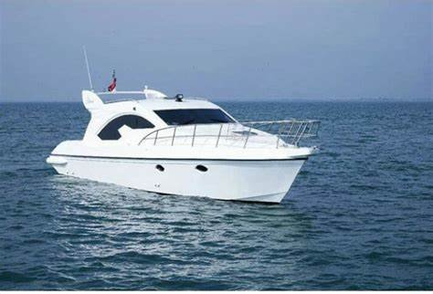
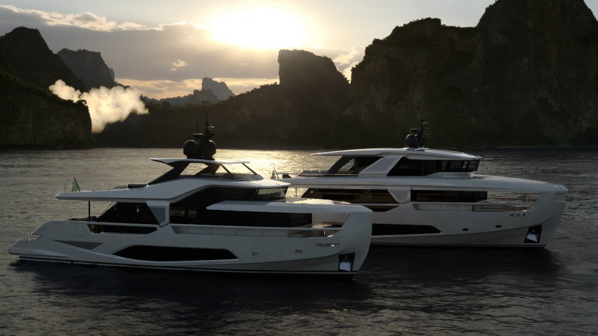

Rooted in authentic shipyard passion, driven by boundary-pushing naval architecture and timeless elegance.
ShipDecKK is a premier European and global shipbuilding atelier specializing in bespoke luxury superyachts and high-tonnage commercial vessels. Founded in 2020 by Everton Deckk, our shipyard unites century-old carpentry traditions with cutting-edge hydrodynamics, setting an uncompromising standard for marine excellence.
Born as the son of a humble carpenter in a historic French coastal shipyard, Everton Deckk spent his youth observing seasoned artisans shaping keels and ribs by hand. From those early salt-spray days, he envisioned vessels that fused soul, architectural warmth, and nautical mastery.
Fueled by years of hands-on boatyard apprenticeship and modern hydrodynamics study, Everton completed his first bespoke cruising hull. It demonstrated unprecedented acoustic silence and sea stability, immediately capturing the acclaim of Mediterranean yacht owners.

In 2020, Everton established ShipDecKK as a full-scale private brand. Beyond manufacturing, the shipyard was conceived as a creative salon where clients collaborate directly with naval designers to co-create bespoke vessels that mirror their lifestyle and spirit.

To stand as the world’s most revered shipyard and maritime dealership, delivering aesthetic brilliance and unwavering safety on every sea.
1. Deliver bespoke vessels that exceed safety, performance, and aesthetic benchmarks.
2. Maintain artisanal hand-finishing alongside digital CAD/hydrodynamic simulation.
3. Build generational relationships through world-class after-sales marine concierge.
4. Pioneer sustainable propulsion and eco-composite hulls for clean ocean travel.
• Excellence: Zero compromise in marine engineering.
• Integrity: Transparent transactions and certified compliance.
• Client Focus: Direct client-to-architect co-creation.
• Innovation: Next-gen hull efficiency and smart automation.
• Reliability: Dependability across the world's roughest oceans.
Awarded for groundbreaking hull innovation and bespoke interior craftsmanship by the International Maritime Association.
Established direct maintenance and concierge facilities across 15 international port hubs spanning four continents.
Recognized by the European Yachting Council for world-class after-sales customer retention and emergency vessel dispatch.
Pioneered autonomous IoT sea monitoring sensors installed standard across all ShipDecKK bespoke builds.